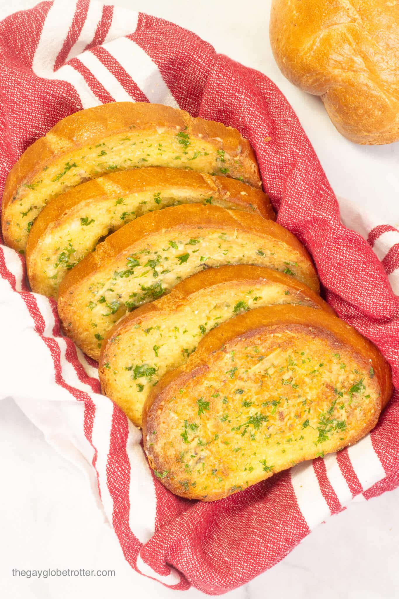

This is one of those family recipes I rarely share with others,
but now it's finally time to share the pure AWESOMENESS
of this spicy tomato sauce my Grandfather perfected to
his taste pallet together with additions from the rest of the family. it's easy and farely quick to make,
but don't wear your best whites cus it's gonna get
sauceyyy!
Ingredients
Makes sauce for half a kilo of Spaghetti
White bread loaf
2 cloves of Garlic
Olive oil and/or Butter
Salt
Pepper
Oregano or other herbs from the garden
Steps
Preheat oven to 175 C.
Peal and mash garlic and cut into tiny pieces.
Mix Ingredients in a bowl
Butter every slice of bread and sprinkle the ingredients on top.
Re-connect pieces together and bumndle them up in aluminium foil.
Heat in oven until butter melts and smell of the herbs hits your nose the instant you open the oven.